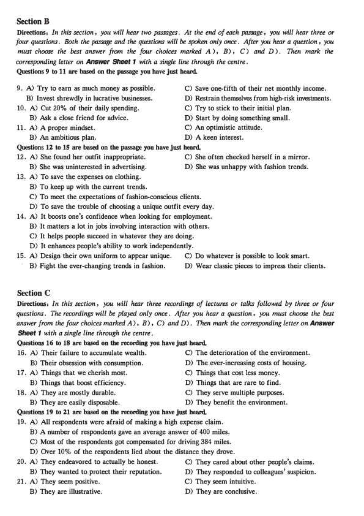
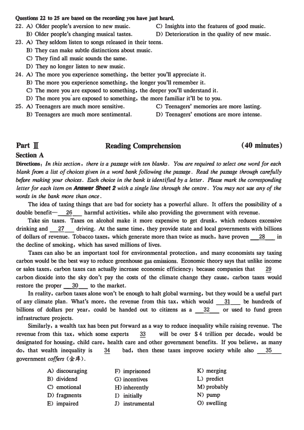
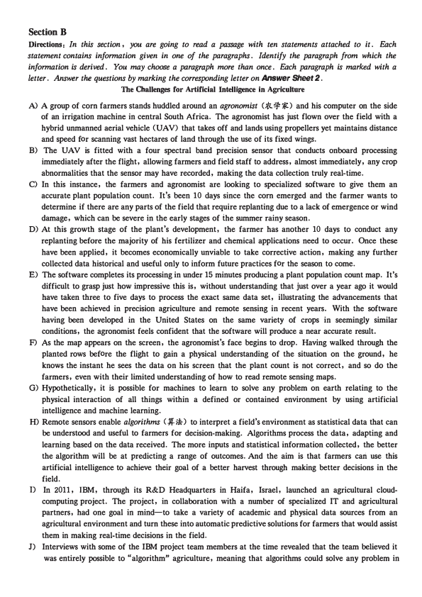
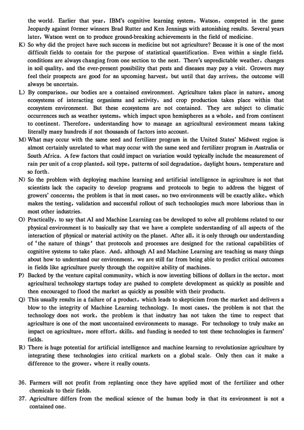
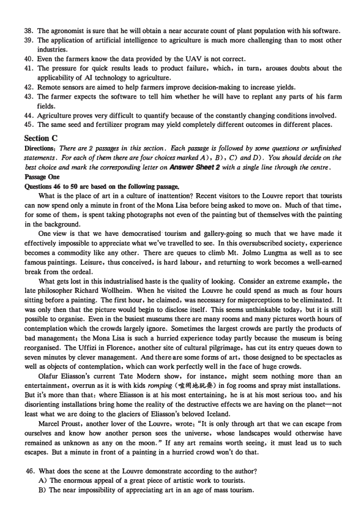
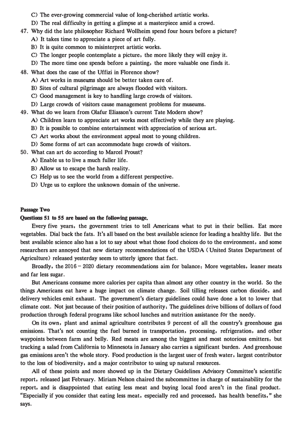
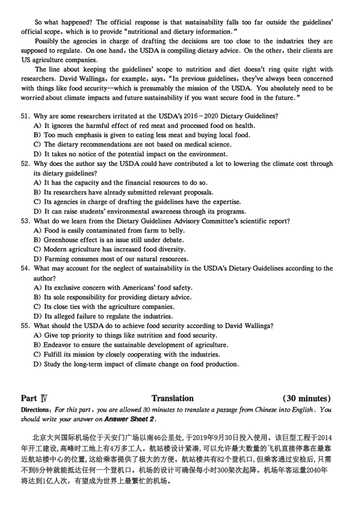

第 1 / 8 页

Part I
Writing
( 30 minutes)
Directions: For this part, you are allowed 30 minutes to write an essay on why students should be encouraged
to develop the ability to meet challenges. You should write at least 150 words but no more than 200 words.
Part ll
Li&iening Comprehension
( 30 minutes)
Section A
Directions: Jn this section, you will hear two long conversations. At the end of each conversation, you will
hear four questions. Both the conversation and the questions will be spoken only once. After you hear a
question, you must choose the best answer from the four choices marked A), B) , C) and D). Then mark
the corresponding letter on Answer Sheet 1 with a single line through the centre.
Questions 1 to 4 are based on the conversation you have just heard.
1. A) She has not received any letter from the man.
C) She has failed 'to reach the manager again.
B) Her claim has been completely disregarded;·
D) Her house has not been repaired in time.
2. A) Their caravan was washed away by the flood.
B) The ground floor of their cottage was flooded.
C) Their entire house was destroyed by the flood.
D) The roof of their cottage collapsed in the flood.
3. A) The woman's failure to pay her house insurance in time.
B) The woman's inaccurate description of the whole incident.
C) The woman's ignorance of the insurance company's policy.
D) The woman's misreading of the insurance company's letter.
4. A) Revise the terms and conditions of the contract.
B) Consult her lawyer about the insurance policy.
C) Talk to the manager of Safe House Insurance.
D) File a lawsuit against the insurance company.
Questions S to 8 are based on the conversation you have just heard.
5. A) They are both worried about the negative impact of technology.
B) They differ greatly in their knowledge of modem technology.
C) They disagree about the future of AI technology.
D) They work in different fields of AI technology.
6. A) Stimulating and motivating.
B) Simply writing Al software.
C) More demanding and requiring special training.
D) Less time-consuming and focusing on creation.
7. A) Old people would be taken care of solely by unfeeling robots.
B) Humans would be tired of communicating with one another.
C) Digital life could replace human civilization.
D) There could be jobs nobody wants to do.
8. A) It will be smarter than
1human beings.
C) It will take away humans' jobs altogether.
B) Chips will be inserted in human brains.
D) Life will become like a science fiction film.
查看 / 复制本页文字
Part I Writing ( 30 minutes) Directions: For this part, you are allowed 30 minutes to write an essay on why students should be encouraged to develop the ability to meet challenges. You should write at least 150 words but no more than 200 words. Part ll Li&iening Comprehension ( 30 minutes) Section A Directions: Jn this section, you will hear two long conversations. At the end of each conversation, you will hear four questions. Both the conversation and the questions will be spoken only once. After you hear a question, you must choose the best answer from the four choices marked A), B) , C) and D). Then mark the corresponding letter on Answer Sheet 1 with a single line through the centre. Questions 1 to 4 are based on the conversation you have just heard. 1. A) She has not received any letter from the man. C) She has failed 'to reach the manager again. B) Her claim has been completely disregarded;· D) Her house has not been repaired in time. 2. A) Their caravan was washed away by the flood. B) The ground floor of their cottage was flooded. C) Their entire house was destroyed by the flood. D) The roof of their cottage collapsed in the flood. 3. A) The woman's failure to pay her house insurance in time. B) The woman's inaccurate description of the whole incident. C) The woman's ignorance of the insurance company's policy. D) The woman's misreading of the insurance company's letter. 4. A) Revise the terms and conditions of the contract. B) Consult her lawyer about the insurance policy. C) Talk to the manager of Safe House Insurance. D) File a lawsuit against the insurance company. Questions S to 8 are based on the conversation you have just heard. 5. A) They are both worried about the negative impact of technology. B) They differ greatly in their knowledge of modem technology. C) They disagree about the future of AI technology. D) They work in different fields of AI technology. 6. A) Stimulating and motivating. B) Simply writing Al software. C) More demanding and requiring special training. D) Less time-consuming and focusing on creation. 7. A) Old people would be taken care of solely by unfeeling robots. B) Humans would be tired of communicating with one another. C) Digital life could replace human civilization. D) There could be jobs nobody wants to do. 8. A) It will be smarter than 1human beings. C) It will take away humans' jobs altogether. B) Chips will be inserted in human brains. D) Life will become like a science fiction film.
第 2 / 8 页

Section B
Directions: In this section, you will hear two passages. At the end of each passage, you will hear three or
four questions. Both the passage and the questions will be spoken only once . After you hear a question , you
must choose the best answer from the four choices marked A ) , B) , C) and D ). Then mark the
corresponding letter on Answer Sheet 1 with a single line through the centre.
Questions 9 to 11 are based on the p*ge you have just heard.
9. A) Try to earn as much money as possible.
C) Save one-fifth of their net monthly income.
B) Invest shrewdly in lucrative businesses.
D) Restrain themselves from high-risk investments.
10. A) Cut 20% of their daily spending.
C) Try to stick to their initial plan.
B) Ask a close friend for advice.
D) Start by doing something small.
11. A) A proper mindset.
C) An optimistic attitude.
B) An ambitious plan.
D) A keen interest.
Questions 12 to 1S are based on the ege you have just heard.
12. A) She found her outfit inappropriate.
C) She of ten checked herself in a mirror.
B) She was uninterested in advertising.
D) She was unhappy with fashion trends.
13. A) To save the expenses on clothing.
B) To keep up with the current trends.
C) To meet the expectations of fashion-consci01:JS clients.
D) To save the trouble of choosing a unique outfit every day.
14. A) It boosts one's confidence when looking for employment.
B) It matters a lot in jobs involving interaction with others.
C) It helps people succeed in whatever they are doing.
D) It enhances people's ability to work independently.
15. A) Design their own uniform to appear unique.
•
B) Fight the ever-changing trends in fashion.
Section C
C) Do whatever is possible to look .smart.
D) Wear classic pieces to impress their clients.
Directions: In this section, you will hear three recordings of lectures or talks followed by three or four
questions. The recordings will be played only once . After you hear a question , you must choose the best
answer from the four choices marked A), B), C) and D). Then mark the corresponding letter on Answer
Sheet 1 with a single line through the centre.
Questions 16 to 18 are based on the recording you have just heard.
16. A) Their failure to accumulate wealth.
C) The deterioration of the environment.
B) Their obsession with consumption.
17. A) Things that we cherish most.
B) Things that boost efficiency.
18. A) They are mostly durable.
D) The ever-increasing costs of housing.
C) Things that cost less money.
D) Things that are rare to find.
C) They serve multiple purposes.
B) They are easily disposable.
D) They benefit the environment.
Questions 19 to 21 are based on the recording you have just heard.
19. A) All respondents were afraid of making a high expense claim.
B) A number of respondents gave an average answer of 400 miles.
C) Most of the respondents got compensated for driving 384 miles.
D) Over 10% of the respondents lied about the distance they drove.
20. A) They endeavored to actually be honest.
C) They cared about other people's claims.
B) They wanted to protect their reputation.
D) They responded to colleagues' suspicion.
21. A) They seem positive.
C) They seem intuitive.
B) They are illustrative.
D) They are conclusive.
查看 / 复制本页文字
Section B Directions: In this section, you will hear two passages. At the end of each passage, you will hear three or four questions. Both the passage and the questions will be spoken only once . After you hear a question , you must choose the best answer from the four choices marked A ) , B) , C) and D ). Then mark the corresponding letter on Answer Sheet 1 with a single line through the centre. Questions 9 to 11 are based on the p*ge you have just heard. 9. A) Try to earn as much money as possible. C) Save one-fifth of their net monthly income. B) Invest shrewdly in lucrative businesses. D) Restrain themselves from high-risk investments. 10. A) Cut 20% of their daily spending. C) Try to stick to their initial plan. B) Ask a close friend for advice. D) Start by doing something small. 11. A) A proper mindset. C) An optimistic attitude. B) An ambitious plan. D) A keen interest. Questions 12 to 1S are based on the ege you have just heard. 12. A) She found her outfit inappropriate. C) She of ten checked herself in a mirror. B) She was uninterested in advertising. D) She was unhappy with fashion trends. 13. A) To save the expenses on clothing. B) To keep up with the current trends. C) To meet the expectations of fashion-consci01:JS clients. D) To save the trouble of choosing a unique outfit every day. 14. A) It boosts one's confidence when looking for employment. B) It matters a lot in jobs involving interaction with others. C) It helps people succeed in whatever they are doing. D) It enhances people's ability to work independently. 15. A) Design their own uniform to appear unique. • B) Fight the ever-changing trends in fashion. Section C C) Do whatever is possible to look .smart. D) Wear classic pieces to impress their clients. Directions: In this section, you will hear three recordings of lectures or talks followed by three or four questions. The recordings will be played only once . After you hear a question , you must choose the best answer from the four choices marked A), B), C) and D). Then mark the corresponding letter on Answer Sheet 1 with a single line through the centre. Questions 16 to 18 are based on the recording you have just heard. 16. A) Their failure to accumulate wealth. C) The deterioration of the environment. B) Their obsession with consumption. 17. A) Things that we cherish most. B) Things that boost efficiency. 18. A) They are mostly durable. D) The ever-increasing costs of housing. C) Things that cost less money. D) Things that are rare to find. C) They serve multiple purposes. B) They are easily disposable. D) They benefit the environment. Questions 19 to 21 are based on the recording you have just heard. 19. A) All respondents were afraid of making a high expense claim. B) A number of respondents gave an average answer of 400 miles. C) Most of the respondents got compensated for driving 384 miles. D) Over 10% of the respondents lied about the distance they drove. 20. A) They endeavored to actually be honest. C) They cared about other people's claims. B) They wanted to protect their reputation. D) They responded to colleagues' suspicion. 21. A) They seem positive. C) They seem intuitive. B) They are illustrative. D) They are conclusive.
第 3 / 8 页

Questions 22 to 25 are based on the recording you have just heard.
22. A) Older people's aversion to new music.
C) Insights into the features of good music.
B) Older people's changing musical tastes.
D) Deterioration in the quality of new music.
23. A) They seldom listen to songs released in their teens.
B) They can make subtle distinctions about music.
C) They find all music sounds the same.
D) They no longer listen to new music.
24. A) The more you experience something, the better you'll appreciate it.
B) The more you experience something, the longer you'll remember it.
C) The more you are exposed to something, the deeper you'll understand it.
D) The more you'are exposed to something, the more familiar it'll be to you.
25. A) Teenagers are much more sensitive.
C) Teenagers' memories are more lasting.
B) Teenagers are much more sentimental.
D) Teenagers' emotions are more intense.
Part][
Section A
Reading Comprehension
( 40 minutes)
Directions: In this section, there is a passage with ten blanks. You are required to select one word for each
blank from a list of choices given in a word bank following the passage. Read the passage through carefully
before making your choices. Each choice in the bank is identified by a letter. Please mark the corresponding
letter for each item on Answer Sheet 2 with a single line through the centre. You may not use any of the
words in the bank more than once.
The idea of taxing things that are bad for society has a powerful allure. It offers the possibility of a
double benefit-N- harmful activities, while also providing the government with revenue.
Take sin taxes. Taxes on alcohol make it more expensive to get drunk, which reduces excessive
drinking and ___'!J__ driving. At the same time, they provide state and local governments with billions
of dollars of revenue. Tobacco taxes, which generate more than twice as much, have proven _28_ in
the decline of smoking, which has saved millions of lives.
Taxes can also be an important tool for environmental protection, and many economists say taxing
carbon would be the best way to reduce greenhouse· gas emissions. Economic theory says that unlike income
or sales taxes, carbon taxes can actually increase economic efficiency; because companies that
29
carbon dioxide into the sky don't pay the costs of the climate change they cause, carbon taxes would
restore the proper O- to the market.
In reality, carbon taxes alone won't be enough to halt global warming, but they would be a useful part
of any climate plan. What's more, the revenue from this tax, which would _fil_ be hundreds of
billions of dollars per year, could be handed out to citizens as a _32_ or used to fund green
infrastructure projects.
Similarly, a wealth tax has been put forward as a way to reduce inequality while raising revenue. The
revenue from this tax, which some experts
33
will be over $ 4 trillion per decade, would be
designated for housing, child care, health care and other government benefits. If you believe, as many
do, that wealth inequality is
34
bad, then these taxes improve society while also _35_
government coffers ( ½ .4).
A) discouraging
B) dividend
C) emotional
D) fragments
E) impaired
F) imprisoned
G) incentives
H) inherently
I) initially
J) instrumental
K) merging
L) predict
M) probably
N) pump
0) swelling
查看 / 复制本页文字
Questions 22 to 25 are based on the recording you have just heard. 22. A) Older people's aversion to new music. C) Insights into the features of good music. B) Older people's changing musical tastes. D) Deterioration in the quality of new music. 23. A) They seldom listen to songs released in their teens. B) They can make subtle distinctions about music. C) They find all music sounds the same. D) They no longer listen to new music. 24. A) The more you experience something, the better you'll appreciate it. B) The more you experience something, the longer you'll remember it. C) The more you are exposed to something, the deeper you'll understand it. D) The more you'are exposed to something, the more familiar it'll be to you. 25. A) Teenagers are much more sensitive. C) Teenagers' memories are more lasting. B) Teenagers are much more sentimental. D) Teenagers' emotions are more intense. Part][ Section A Reading Comprehension ( 40 minutes) Directions: In this section, there is a passage with ten blanks. You are required to select one word for each blank from a list of choices given in a word bank following the passage. Read the passage through carefully before making your choices. Each choice in the bank is identified by a letter. Please mark the corresponding letter for each item on Answer Sheet 2 with a single line through the centre. You may not use any of the words in the bank more than once. The idea of taxing things that are bad for society has a powerful allure. It offers the possibility of a double benefit-N- harmful activities, while also providing the government with revenue. Take sin taxes. Taxes on alcohol make it more expensive to get drunk, which reduces excessive drinking and ___'!J__ driving. At the same time, they provide state and local governments with billions of dollars of revenue. Tobacco taxes, which generate more than twice as much, have proven _28_ in the decline of smoking, which has saved millions of lives. Taxes can also be an important tool for environmental protection, and many economists say taxing carbon would be the best way to reduce greenhouse· gas emissions. Economic theory says that unlike income or sales taxes, carbon taxes can actually increase economic efficiency; because companies that 29 carbon dioxide into the sky don't pay the costs of the climate change they cause, carbon taxes would restore the proper O- to the market. In reality, carbon taxes alone won't be enough to halt global warming, but they would be a useful part of any climate plan. What's more, the revenue from this tax, which would _fil_ be hundreds of billions of dollars per year, could be handed out to citizens as a _32_ or used to fund green infrastructure projects. Similarly, a wealth tax has been put forward as a way to reduce inequality while raising revenue. The revenue from this tax, which some experts 33 will be over $ 4 trillion per decade, would be designated for housing, child care, health care and other government benefits. If you believe, as many do, that wealth inequality is 34 bad, then these taxes improve society while also _35_ government coffers ( ½ .4). A) discouraging B) dividend C) emotional D) fragments E) impaired F) imprisoned G) incentives H) inherently I) initially J) instrumental K) merging L) predict M) probably N) pump 0) swelling
第 4 / 8 页

Section B
Directions: In this section, you are going to read a passage with ten statements attached to it. F.ach
statement contains information given in one of the paragraphs. Identify the paragraph from which the
information is derived. You may choose a paragraph more than once. F.ach paragraph is marked with a
letter. Answer the questions by marking the corresponding letter on Answer Sheet 2.
The Challenges for Artificial Intelligence in Agriculture
A) A group of corn farmers stands huddled around an agronomist <*!lfr ]) and his computer on the side
of an irrigation machine in central South Africa. The agronomist has just flown over the field with a
hybrid unmanned aerial vehicle (UAV) that takes off and lands using propellers yet maintains distance
and speed for scanning vast hectares of land through the use of its fixed wings.
B) The UAV is fitted with a four spectral band precision sensor that conducts onboard processing
immediately after the flight, allowing farmers and field staff to address, almost immediately, any crop
abnormalities that the sensor may have recorded, making the data collection truly real-time.
C) In this instance, the farmers and agronomist are looking to specialized software to give them an
accurate plant population count. It's been 10 days since the corn emerged and the farmer wants to
determine if there are any parts of the field that require replanting due to a lack of emergence or wind
damage, which can be severe in the early stages of the summer rainy season.
D) At this growth stage of the plant's development, the farmer has another 10 days to conduct any
replanting before the majority of his fertilizer and chemical applications need to occur. Once these
have been applied, it becomes economically unviable to take corrective action, making any further
collected data historical and useful only to inform future practices for the season to come.
E) The software completes its processing in under 15 minutes producing a plant population count map. It's
difficult to grasp just how impressive this is, without understanding that just over a year ago it would
have taken three to five days to process the exact same data set, illustrating the advancements that
have been achieved in precision agriculture and remote sensing in recent years. With the software
having been developed in the United States on the same variety of crops in seemingly similar
conditions, the agronomist feels confident that the software will produce a near accurate result.
F) As the map appears on the screen, the agronomist's face begins to drop. Having walked through the
planted rows before the flight to gain a physical understanding of the situation on the ground, he
knows the instant he sees the data on his screen ^hat the plant count is not correct, and so do the
farmers, even with their limited understanding of _how to read remote sensing maps.
G) Hypothetically, it is possible for machines to learn to solve any problem on earth relating to the
physical interaction of all things within a defined or contained environment by using artificial
intelligence and machine learning.
H) Remote sensors enable algorithms (-1f-*) to interpret a field's environment as statistical data that can
be understood and useful to farmers for decision-making. Algorithms process the data, adapting and
learning based on the data received. The more inputs and statistical information collected, the better
the algorithm will be at predicting a range of outcomes. And the aim is that farmers cari use this
artificial intelligence to achieve their goal of a better harvest through making better decisions in the
field.
D In 2011, IBM, through its R&D Headquarters in Haifa, Israel, launched an agricultural cloud
computing project. The project, in collaboration with a number of specialized IT and agricultural
partners, had one goal in mind-to take a variety of academic and physical data sources from an
agricultural environment and tum these into automatic predictive solutions for farmers that would assist
them in making real-time decisions in the field.
J) Interviews with some of the IBM project team members at the time revealed that the team believed it
was entirely possible to "algorithm" agriculture, meaning that algorithms could solve any problem in
查看 / 复制本页文字
Section B Directions: In this section, you are going to read a passage with ten statements attached to it. F.ach statement contains information given in one of the paragraphs. Identify the paragraph from which the information is derived. You may choose a paragraph more than once. F.ach paragraph is marked with a letter. Answer the questions by marking the corresponding letter on Answer Sheet 2. The Challenges for Artificial Intelligence in Agriculture A) A group of corn farmers stands huddled around an agronomist <*!lfr ]) and his computer on the side of an irrigation machine in central South Africa. The agronomist has just flown over the field with a hybrid unmanned aerial vehicle (UAV) that takes off and lands using propellers yet maintains distance and speed for scanning vast hectares of land through the use of its fixed wings. B) The UAV is fitted with a four spectral band precision sensor that conducts onboard processing immediately after the flight, allowing farmers and field staff to address, almost immediately, any crop abnormalities that the sensor may have recorded, making the data collection truly real-time. C) In this instance, the farmers and agronomist are looking to specialized software to give them an accurate plant population count. It's been 10 days since the corn emerged and the farmer wants to determine if there are any parts of the field that require replanting due to a lack of emergence or wind damage, which can be severe in the early stages of the summer rainy season. D) At this growth stage of the plant's development, the farmer has another 10 days to conduct any replanting before the majority of his fertilizer and chemical applications need to occur. Once these have been applied, it becomes economically unviable to take corrective action, making any further collected data historical and useful only to inform future practices for the season to come. E) The software completes its processing in under 15 minutes producing a plant population count map. It's difficult to grasp just how impressive this is, without understanding that just over a year ago it would have taken three to five days to process the exact same data set, illustrating the advancements that have been achieved in precision agriculture and remote sensing in recent years. With the software having been developed in the United States on the same variety of crops in seemingly similar conditions, the agronomist feels confident that the software will produce a near accurate result. F) As the map appears on the screen, the agronomist's face begins to drop. Having walked through the planted rows before the flight to gain a physical understanding of the situation on the ground, he knows the instant he sees the data on his screen ^hat the plant count is not correct, and so do the farmers, even with their limited understanding of _how to read remote sensing maps. G) Hypothetically, it is possible for machines to learn to solve any problem on earth relating to the physical interaction of all things within a defined or contained environment by using artificial intelligence and machine learning. H) Remote sensors enable algorithms (-1f-*) to interpret a field's environment as statistical data that can be understood and useful to farmers for decision-making. Algorithms process the data, adapting and learning based on the data received. The more inputs and statistical information collected, the better the algorithm will be at predicting a range of outcomes. And the aim is that farmers cari use this artificial intelligence to achieve their goal of a better harvest through making better decisions in the field. D In 2011, IBM, through its R&D Headquarters in Haifa, Israel, launched an agricultural cloud computing project. The project, in collaboration with a number of specialized IT and agricultural partners, had one goal in mind-to take a variety of academic and physical data sources from an agricultural environment and tum these into automatic predictive solutions for farmers that would assist them in making real-time decisions in the field. J) Interviews with some of the IBM project team members at the time revealed that the team believed it was entirely possible to "algorithm" agriculture, meaning that algorithms could solve any problem in
第 5 / 8 页

the world. Earlier that year, IBM's cognitive learning system, Watson, competed in the game
Jeopardy against former winners Brad Rutter and Ken Jennings with astonishing results. Several years
later, Watson went on to produce ground-breaking achievements in the field of medicine.
K) So why did the project have such success in medicine but not agriculture? Because it is one of the most
difficult fields to contain for the purpose of statistical quantification. Even within a single field,
conditions are always changing from one section to the next. There's unpredictable weather, changes
in soil quality, and the ever-present possibility that pests and diseases may pay a visit. Growers may
feel their prospects are good for an upcoming harvest, but until that day arrives, the outcome will
always be uncertain.
L) By comparison, our bodies are a contained environment. Agriculture takes place in nature, among
ecosystems of interacting organisms and activity, and crop production takes place within that
ecosystem environment. But these ecosystems are not contained. They are subject to climatic
occurrences such as weather systems, which impact upon hemispheres as a whole, and from continent
to continent. Therefore, understanding how to manage an agricultural environment means taking
literally many hundreds if not thousands of factors into account.
M) What may occur with the same seed and fertilizer program in the United States' Midwest region is
almost certainly unrelated to what may occur with the same seed and fertilizer program in Australia or
South Africa. A few factors that could impact on variation would typically include the measurement of
rain per unit of a crop planted, soil type, patterns of soil degradation, daylight hours, temperature and
so forth.
N) So the problem with deploying machine learning and artificial intelligence in agriculture is not that
scientists lack the capacity to develop programs and protocols to begin to address the biggest of
growers' concerns; the problem is that in most cases, no two environments will be exactly alike, which
makes the testing, validation and successful rollout of such technologies much more laborious than in
most other industries.
0) Practically, to say that AI and Machine Learning can be developed to solve all problems related to our
physical environment is to ba[ically say that we have a complete understanding of all aspects of the
interaction of physical or material activity on the planet. After all, it is only through our understanding
of 'the nature of things' that protocols and processes are designed for the rational capabilities of
cognitive systems to take place. And, although AI and Machine Learning are teaching us many things
about how to understand our environment, we are still far from being able to predict critical outcomes
in fields like agriculture purely through the cognitive ability of machines.
P) Backed by the venture capital community, which is now investing billions of dollars in the sector, most
agricultural technology startups today are pushed to complete development as quickly as possible and
then encouraged to flood the market as quickly as possible with their products.
Q) This usually results in a failure of a product, which leads to skepticism from the market and delivers a
blow to the integrity of Machine Leaming technology. In most cases, the problem is not that the
technology does not work, the problem is that industry has not taken the time to respect that
agriculture is one of the most uncontained environments to manage. For technology to truly make an
impact on agriculture, more effort, skills, and funding is needed to test these technologies in farmers'
fields.
R) There is huge potential for artificial intelligence and machine learning to revolutionize agriculture by
integrating these technologies into critical markets on a global scale. Only then can it make a
difference to the grower, where it really counts.
36. Farmers will not profit from replanting once they have ·applied most of the · fertilizer and other
chemicals to their fields.
37. Agriculture differs from the medical science of the human body in that its environment is not a
contained one.
查看 / 复制本页文字
the world. Earlier that year, IBM's cognitive learning system, Watson, competed in the game Jeopardy against former winners Brad Rutter and Ken Jennings with astonishing results. Several years later, Watson went on to produce ground-breaking achievements in the field of medicine. K) So why did the project have such success in medicine but not agriculture? Because it is one of the most difficult fields to contain for the purpose of statistical quantification. Even within a single field, conditions are always changing from one section to the next. There's unpredictable weather, changes in soil quality, and the ever-present possibility that pests and diseases may pay a visit. Growers may feel their prospects are good for an upcoming harvest, but until that day arrives, the outcome will always be uncertain. L) By comparison, our bodies are a contained environment. Agriculture takes place in nature, among ecosystems of interacting organisms and activity, and crop production takes place within that ecosystem environment. But these ecosystems are not contained. They are subject to climatic occurrences such as weather systems, which impact upon hemispheres as a whole, and from continent to continent. Therefore, understanding how to manage an agricultural environment means taking literally many hundreds if not thousands of factors into account. M) What may occur with the same seed and fertilizer program in the United States' Midwest region is almost certainly unrelated to what may occur with the same seed and fertilizer program in Australia or South Africa. A few factors that could impact on variation would typically include the measurement of rain per unit of a crop planted, soil type, patterns of soil degradation, daylight hours, temperature and so forth. N) So the problem with deploying machine learning and artificial intelligence in agriculture is not that scientists lack the capacity to develop programs and protocols to begin to address the biggest of growers' concerns; the problem is that in most cases, no two environments will be exactly alike, which makes the testing, validation and successful rollout of such technologies much more laborious than in most other industries. 0) Practically, to say that AI and Machine Learning can be developed to solve all problems related to our physical environment is to ba[ically say that we have a complete understanding of all aspects of the interaction of physical or material activity on the planet. After all, it is only through our understanding of 'the nature of things' that protocols and processes are designed for the rational capabilities of cognitive systems to take place. And, although AI and Machine Learning are teaching us many things about how to understand our environment, we are still far from being able to predict critical outcomes in fields like agriculture purely through the cognitive ability of machines. P) Backed by the venture capital community, which is now investing billions of dollars in the sector, most agricultural technology startups today are pushed to complete development as quickly as possible and then encouraged to flood the market as quickly as possible with their products. Q) This usually results in a failure of a product, which leads to skepticism from the market and delivers a blow to the integrity of Machine Leaming technology. In most cases, the problem is not that the technology does not work, the problem is that industry has not taken the time to respect that agriculture is one of the most uncontained environments to manage. For technology to truly make an impact on agriculture, more effort, skills, and funding is needed to test these technologies in farmers' fields. R) There is huge potential for artificial intelligence and machine learning to revolutionize agriculture by integrating these technologies into critical markets on a global scale. Only then can it make a difference to the grower, where it really counts. 36. Farmers will not profit from replanting once they have ·applied most of the · fertilizer and other chemicals to their fields. 37. Agriculture differs from the medical science of the human body in that its environment is not a contained one.
第 6 / 8 页

38. The agronomist is sure that he will obtain a near accurate count of plant population with his software.
39. The application of artificial intelligence to agriculture is much more challenging than to most other
industries.
40. Even the farmers know-the data provided by the UAV is not correct.
41. The pressure for quick results leads to product failure, which, in tum, arouses doubts about the
applicability of AI tchnology to agriculture.
42. Remote sensors are aimed to help farmers improve decision-making to increase _yields.
43. The farmer expects the software to tell him whether he will have to replant any parts of his farm
fields.
44 .. Agriculture proves very difficult to quantify because of the constantly changing conditions involved.
45. The same seed and fertilizer program may yield completely different outcomes in different places.
Section C
Directions: There are 2 passages in' this section. &eh passage is followed by some questions or unfinished
statements. For each of them there are four choices marked A) , B) , C) and D) . You should decide on the
best choice and mark the corresponding.letter on Answer Sheet 2 with a single line through the centre.
Passage One
Questions 46 to SO are based on the following p!ge.
What is the place of art in a culture of inattention? Recent visitors to the Louvre report that tourists
can now spend only a minute in front of the Mona Lisa before being asked to move on. Much of that time,
for some of them, is spent taking photographs not even of the painting but of themselves with the painting
in the background.
One view is that we have democratised' tourism and gallery-going so much that we have made it
effectively impossible to appreciate what we've travelled to see. In this oversubscribed society, experience
becomes a commodity like any other. There are queues to climb Mt. Jolmo Lungma as well as to see
famous paintings. Leisure, thus conceived, is hard labour, and returning to work becomes a well-eameq
break from the ordeal.
at gets lost in this industrialised haste is the quality of looking. Consider an extreme example, the
late philosopher Richard Wollheim. When he visited the Louvre he could spend as much as four hours
sitting before a painting. The first hour, he·claimed, was necessary for misperceptions to be eliminated. It
was only then that the picture would begin to disclose itself. This seems unthinkable today, but it is still
possible to organise. Even in the busiest museums there are many rooms and many pictures worth hours of
contemplation which the crowds largely ignore. Sometimes the largest crowds are partly the products of
bad management; the Mona Lisa is such a hurried experience today partly because the museum is being
reorganised. The Uffizi in Florence, another site of cultural pilgrimage, has cut its entry queues down to
seven minutes by clever management. And there are some forms of art, those designed to be spectacles as
well as objects of contemplation, which can work perfectly well in the face of huge crowds.
Olafur Eliasson's current Tate Modem show, for instance, might seem nothing more than an
entertainment, overrun as it is with kids romping. ( 1'i: lifi] 4@-) in fog rooms and spray mist installations.
But it's more than that: where Eliasson is at his most entertaining, he is at his most serious too, and his
disorienting installations bring home· the reality of the destructive effects we are having on the planet-not
• least what we are doing to the glaciers of Eliasson's beloved Iceland.
Marcel Proust, another lover of the Louvre, wrote: "It is only through art that we can escape from
ourselves and know how another person sees the universe, whose landscapes would otherwise have
remained as unknown as any on the moon." If any art remains worth seeing,· it must lead us to such
escapes. But a minute in front of a painting in a hurried crowd won't do that.
46. What does the scene at the Louvre demonstrate according to the author?
A) The enormous appeal of a great piece of artistic work to tourists.
B) The near impossibility of appreciating art in an age of mass tourism.
查看 / 复制本页文字
本页源文件的文字编码有异常。原卷显示正常；复制文字需对照原卷核查。
38. The agronomist is sure that he will obtain a near accurate count of plant population with his software. 39. The application of artificial intelligence to agriculture is much more challenging than to most other industries. 40. Even the farmers know-the data provided by the UAV is not correct. 41. The pressure for quick results leads to product failure, which, in tum, arouses doubts about the applicability of AI tchnology to agriculture. 42. Remote sensors are aimed to help farmers improve decision-making to increase _yields. 43. The farmer expects the software to tell him whether he will have to replant any parts of his farm fields. 44 .. Agriculture proves very difficult to quantify because of the constantly changing conditions involved. 45. The same seed and fertilizer program may yield completely different outcomes in different places. Section C Directions: There are 2 passages in' this section. &eh passage is followed by some questions or unfinished statements. For each of them there are four choices marked A) , B) , C) and D) . You should decide on the best choice and mark the corresponding.letter on Answer Sheet 2 with a single line through the centre. Passage One Questions 46 to SO are based on the following p!ge. What is the place of art in a culture of inattention? Recent visitors to the Louvre report that tourists can now spend only a minute in front of the Mona Lisa before being asked to move on. Much of that time, for some of them, is spent taking photographs not even of the painting but of themselves with the painting in the background. One view is that we have democratised' tourism and gallery-going so much that we have made it effectively impossible to appreciate what we've travelled to see. In this oversubscribed society, experience becomes a commodity like any other. There are queues to climb Mt. Jolmo Lungma as well as to see famous paintings. Leisure, thus conceived, is hard labour, and returning to work becomes a well-eameq break from the ordeal. at gets lost in this industrialised haste is the quality of looking. Consider an extreme example, the late philosopher Richard Wollheim. When he visited the Louvre he could spend as much as four hours sitting before a painting. The first hour, he·claimed, was necessary for misperceptions to be eliminated. It was only then that the picture would begin to disclose itself. This seems unthinkable today, but it is still possible to organise. Even in the busiest museums there are many rooms and many pictures worth hours of contemplation which the crowds largely ignore. Sometimes the largest crowds are partly the products of bad management; the Mona Lisa is such a hurried experience today partly because the museum is being reorganised. The Uffizi in Florence, another site of cultural pilgrimage, has cut its entry queues down to seven minutes by clever management. And there are some forms of art, those designed to be spectacles as well as objects of contemplation, which can work perfectly well in the face of huge crowds. Olafur Eliasson's current Tate Modem show, for instance, might seem nothing more than an entertainment, overrun as it is with kids romping. ( 1'i: lifi] 4@-) in fog rooms and spray mist installations. But it's more than that: where Eliasson is at his most entertaining, he is at his most serious too, and his disorienting installations bring home· the reality of the destructive effects we are having on the planet-not • least what we are doing to the glaciers of Eliasson's beloved Iceland. Marcel Proust, another lover of the Louvre, wrote: "It is only through art that we can escape from ourselves and know how another person sees the universe, whose landscapes would otherwise have remained as unknown as any on the moon." If any art remains worth seeing,· it must lead us to such escapes. But a minute in front of a painting in a hurried crowd won't do that. 46. What does the scene at the Louvre demonstrate according to the author? A) The enormous appeal of a great piece of artistic work to tourists. B) The near impossibility of appreciating art in an age of mass tourism.
第 7 / 8 页

C) The ever-growing commercial value of long-cherished artistic works.
D) The real difficulty in getting a glimpse at a masterpiece. amid a crowd.
4 7. Why did the late philosopher Richard Wollheim spend four hours before a picture?
A) It takes time to appreciate a piece o_f art fully.
B) It is quite common to misinterpret artistic works.
C) The longer people contemplate a picture, the more likely they will enjoy it.
D) The more time one spends before a painting, the more valuable one finds it.
48. What does the case of the Uffizi in Florence show?
A) Art works in museums should be better taken care of.
B) Sites of cultural pilgrimage are always flooded with visitors.
C) Good management is key to handling large crowds of visitors.
D) Large crowds of visitors cause management problems for museums.
49. What do we learn from Olafur Eliasson's current Tate Modern show?
A) Children learn to appreciate art works most effectively while they are playing.
B) It is possible to combine entertainment with appreciation of serious art.
C) Art works about the environment appeal most to young children.
D) Some forms of art can accommodate huge crowds of visitors.
50. What can art do according to Marcel Proust?
A) Enable us to live a much fuller life.
B) Allow us to escape the harsh reality.
C) Help us to see the world from a different perspective.
D) Urge us to explore the unknown domain of the universe.
Passage Two
Questions 51 to SS are based on the following passage.
Every five years, the government tries to tell Americans what to put in their bellies. Eat more
vegetables. Dial back the fats. It's all based on the best available science for leading a healthy life. But the
best available science also has a lot to say about what those food choices do to the environment, and some
researchers are annoyed that new dietary recommendations of the USDA ( United States Department of
Agriculture) released yesterday seem to utterly ignore that fact.
Broadly, the 2016- 2020 dietary recommendations aim for balance: More vegetables, leaner meats
and far less sugar.
But Americans consume more calories per capita than almost any other country in the- world. So the
things Americans eat have a huge impact on climate change. Soil tilling releases carbon dioxide, and
delivery vehicles emit exhaust. The government's dietary guidelines could have done a lot to lower that
climate cost. Not just because of their position of authority: The guidelines drive billions of dollars of food
production through federal programs like school lunches and nutrition assistance for the needy.
On its own, plant and animal agriculture contributes 9 percent of all the country's greenhouse gas
emissions. That's not counting the fuel burned in transportation, processing, refrigeration, and other
waypoints between farm and belly. Red meats are among the biggest and most notorious emitters, but
trucking a salad from California to Minnesota in January also carries a significant burden. And greenhouse
gas emissions aren't the whole story. Food production is the largest user of fresh water, largest contributor
to the loss of biodiversity, and a major contributor to using up natural resources.
All of these points and more showed up in the Dietary Guidelines Advisory Committee's scientific
report, released last February. Miriam Nelson chaired the subcommittee in charge of sustainability for the
report, and is disappointed that eating less meat and buying local food aren't in the final product.
"Especially if you consider that eating less meat, especially red and processed, has health benefits," she
says.
查看 / 复制本页文字
C) The ever-growing commercial value of long-cherished artistic works. D) The real difficulty in getting a glimpse at a masterpiece. amid a crowd. 4 7. Why did the late philosopher Richard Wollheim spend four hours before a picture? A) It takes time to appreciate a piece o_f art fully. B) It is quite common to misinterpret artistic works. C) The longer people contemplate a picture, the more likely they will enjoy it. D) The more time one spends before a painting, the more valuable one finds it. 48. What does the case of the Uffizi in Florence show? A) Art works in museums should be better taken care of. B) Sites of cultural pilgrimage are always flooded with visitors. C) Good management is key to handling large crowds of visitors. D) Large crowds of visitors cause management problems for museums. 49. What do we learn from Olafur Eliasson's current Tate Modern show? A) Children learn to appreciate art works most effectively while they are playing. B) It is possible to combine entertainment with appreciation of serious art. C) Art works about the environment appeal most to young children. D) Some forms of art can accommodate huge crowds of visitors. 50. What can art do according to Marcel Proust? A) Enable us to live a much fuller life. B) Allow us to escape the harsh reality. C) Help us to see the world from a different perspective. D) Urge us to explore the unknown domain of the universe. Passage Two Questions 51 to SS are based on the following passage. Every five years, the government tries to tell Americans what to put in their bellies. Eat more vegetables. Dial back the fats. It's all based on the best available science for leading a healthy life. But the best available science also has a lot to say about what those food choices do to the environment, and some researchers are annoyed that new dietary recommendations of the USDA ( United States Department of Agriculture) released yesterday seem to utterly ignore that fact. Broadly, the 2016- 2020 dietary recommendations aim for balance: More vegetables, leaner meats and far less sugar. But Americans consume more calories per capita than almost any other country in the- world. So the things Americans eat have a huge impact on climate change. Soil tilling releases carbon dioxide, and delivery vehicles emit exhaust. The government's dietary guidelines could have done a lot to lower that climate cost. Not just because of their position of authority: The guidelines drive billions of dollars of food production through federal programs like school lunches and nutrition assistance for the needy. On its own, plant and animal agriculture contributes 9 percent of all the country's greenhouse gas emissions. That's not counting the fuel burned in transportation, processing, refrigeration, and other waypoints between farm and belly. Red meats are among the biggest and most notorious emitters, but trucking a salad from California to Minnesota in January also carries a significant burden. And greenhouse gas emissions aren't the whole story. Food production is the largest user of fresh water, largest contributor to the loss of biodiversity, and a major contributor to using up natural resources. All of these points and more showed up in the Dietary Guidelines Advisory Committee's scientific report, released last February. Miriam Nelson chaired the subcommittee in charge of sustainability for the report, and is disappointed that eating less meat and buying local food aren't in the final product. "Especially if you consider that eating less meat, especially red and processed, has health benefits," she says.
第 8 / 8 页

So what happened? The official response is that sustainability falls too far outside the guidelines'
official scope, which is to provide "nutritional and dietary information."
Possibly the agencies in charge of drafting the decisions are too close to the industries they are
supposed to regulate. On one hand, the USDA is compiling dietary advice. On the other, their clients are
US agriculture companies.
The line about keeping the guidelines' scope to nutrition and diet doesn't ring quite right with
researchers. David Wallinga, for example, says, "In previous guidelines, they've always been concerned
with things like food security-which is presumably the mission of the USDA. You absolutely need to be
worried about climate impacts and future sustainability if you want secure food in the future."
51. Why are some researchers irritated at the USDA's 2016 - 2020 Dietary Guidelines?
A) It ignores the harmful effect of red meat and processed food on health.
B) Too much emphasis is given to-eating less meat and buying local food.
C) The dietary recommendations are not based on medical science.
D) It takes no notice of the potential impact on the environment.
52. Why does the author say the USDA could ·have contributed a lot to lowering the climate cost through
its dietary guidelines?
A) It has the capacity and the financial resources to do so.
B) Its researchers have already submitted relevant proposals.
C) Its agencies in charge of drafting the guidelines have the expertise.
D) It can raise students' environmental awareness through its programs.
53. What do we learn from the Dietary Guidelines Advisory Committee's scientific report?
A) Food is easily contaminated from farm to belly.
B) Greenhouse effect is an issue still under debate.
C) Modern agriculture has increased food diversity.
DLFarming consumes most of our natural resources.
54. What may account for the neglect of sustainability in the USDA's Dietary Guidelines according to the
author?
A) Its exclusive concern with Americans' food safety.
B) Its sole responsibility for providing dietary advice.
C) Its close ties with the agriculture companies.
D) Its alleged failure to regulate the industries.
55. What should the USDA do to achieve food security according to David Wallinga?
A) Give top priority to things like nutrition and food security.
B) .Endeavor to ensure the sustainable development of agriculture.
C) Fulfill its mission by closely cooperating with the industries.
D) Study the long-term impact of climate change on food production.
Part N
Translation
( 30 minutes)
Directions: For this part , you are allowed 30 minutes to translate a passage from Chinese into English . • You
should write your answier on Answer Sheet 2.
北京大兴国际机场位于天安门广场以南46公里处,于2019年9月30日投入使用。该巨型工程于2014
年开工建设,高峰时工地上有4万多工人。航站楼设计紧凑,可以允许最大数量的飞机直接停靠在最靠
近航站楼中心的位置,这给乘客提供了极大的方便。航站楼共有82个登机口,但乘客通过安检后,只需
不到8分钟就能抵达任何一个登机口。机场的设计可确保每小时300架次起降。机场年客运量2040年
将达到1亿人次，有望成为世界上最繁忙的机场。
查看 / 复制本页文字
So what happened? The official response is that sustainability falls too far outside the guidelines'
official scope, which is to provide "nutritional and dietary information."
Possibly the agencies in charge of drafting the decisions are too close to the industries they are
supposed to regulate. On one hand, the USDA is compiling dietary advice. On the other, their clients are
US agriculture companies.
The line about keeping the guidelines' scope to nutrition and diet doesn't ring quite right with
researchers. David Wallinga, for example, says, "In previous guidelines, they've always been concerned
with things like food security-which is presumably the mission of the USDA. You absolutely need to be
worried about climate impacts and future sustainability if you want secure food in the future."
51. Why are some researchers irritated at the USDA's 2016 - 2020 Dietary Guidelines?
A) It ignores the harmful effect of red meat and processed food on health.
B) Too much emphasis is given to-eating less meat and buying local food.
C) The dietary recommendations are not based on medical science.
D) It takes no notice of the potential impact on the environment.
52. Why does the author say the USDA could ·have contributed a lot to lowering the climate cost through
its dietary guidelines?
A) It has the capacity and the financial resources to do so.
B) Its researchers have already submitted relevant proposals.
C) Its agencies in charge of drafting the guidelines have the expertise.
D) It can raise students' environmental awareness through its programs.
53. What do we learn from the Dietary Guidelines Advisory Committee's scientific report?
A) Food is easily contaminated from farm to belly.
B) Greenhouse effect is an issue still under debate.
C) Modern agriculture has increased food diversity.
DLFarming consumes most of our natural resources.
54. What may account for the neglect of sustainability in the USDA's Dietary Guidelines according to the
author?
A) Its exclusive concern with Americans' food safety.
B) Its sole responsibility for providing dietary advice.
C) Its close ties with the agriculture companies.
D) Its alleged failure to regulate the industries.
55. What should the USDA do to achieve food security according to David Wallinga?
A) Give top priority to things like nutrition and food security.
B) .Endeavor to ensure the sustainable development of agriculture.
C) Fulfill its mission by closely cooperating with the industries.
D) Study the long-term impact of climate change on food production.
Part N
Translation
( 30 minutes)
Directions: For this part , you are allowed 30 minutes to translate a passage from Chinese into English . • You
should write your answier on Answer Sheet 2.
北京大兴国际机场位于天安门广场以南46公里处,于2019年9月30日投入使用。该巨型工程于2014
年开工建设,高峰时工地上有4万多工人。航站楼设计紧凑,可以允许最大数量的飞机直接停靠在最靠
近航站楼中心的位置,这给乘客提供了极大的方便。航站楼共有82个登机口,但乘客通过安检后,只需
不到8分钟就能抵达任何一个登机口。机场的设计可确保每小时300架次起降。机场年客运量2040年
将达到1亿人次，有望成为世界上最繁忙的机场。